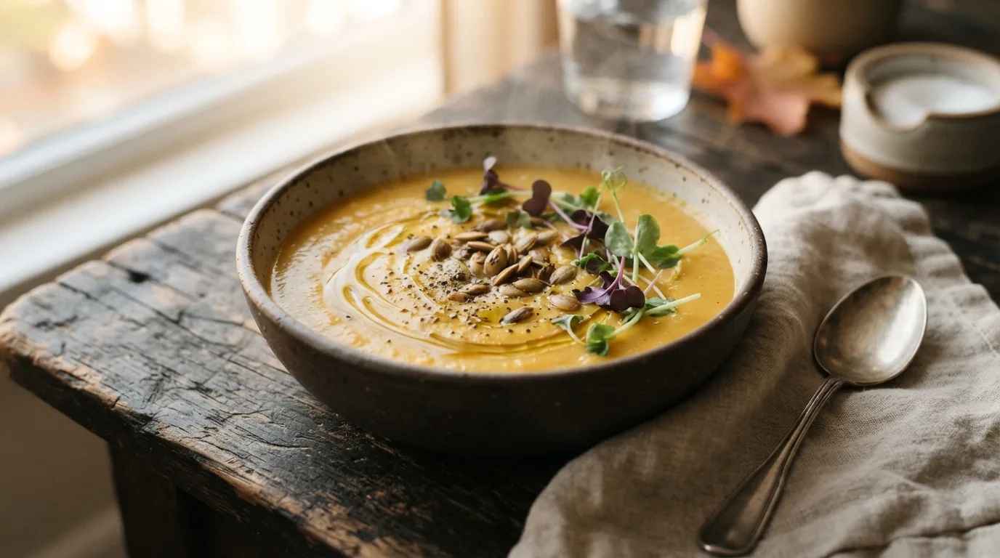

local_fire_department
RECETA DE ESTACIÓN · FUEGO LENTO
Crema de zapallo asado

schedule
Tiempo total
45 minutos
soup_kitchen
Rendimiento
4 porciones
Ingredientes
Paso a paso
1
Calentá el horno a 200 °C. Cortá el zapallo en cubos, condimentalo con aceite y sal, y horneá 30 minutos.
2
Rehogá la cebolla y el ajo picados.
3
Sumá el zapallo y el caldo y cociná 10 minutos.
4
Procesá hasta que quede cremoso y ajustá la sal.
5
Serví con semillas tostadas y pimienta.
DESLIZAR PARA CONTINUAR
arrow_downward
Pág. 05 · Edición Otoño → 06 Cinco hábitos de despensa